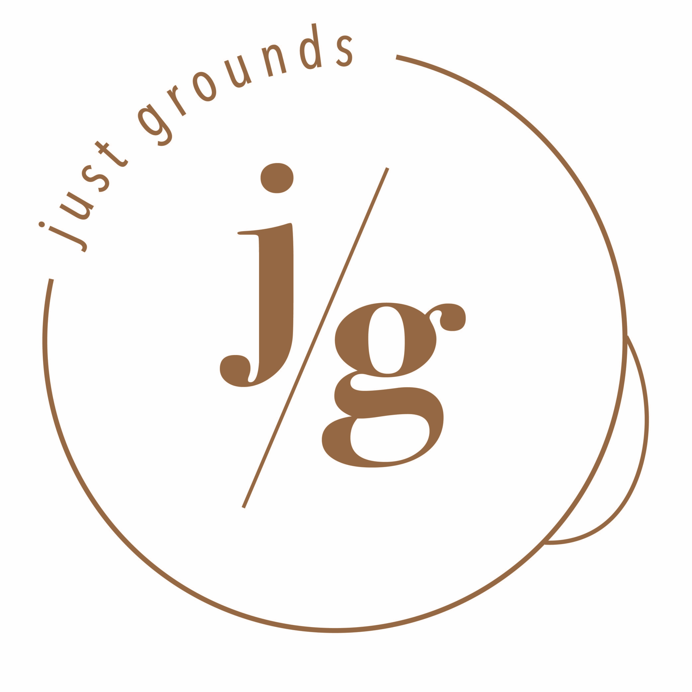

My Portfolio
First and foremost, this website is a piece of my portfolio. I used HTML and css in brackets to code this website and then linked it to github.
Recreation of a website
During one of my classes, I had to find a website that I felt was not user friendly and recreate it in order to make it user friendly as well as showcase my experience of HTML and CSS. To find the website click here.
Logo Design
While attending JMU I was given the oppoturnity to work with a non-profit organization that wanted to start their own coffee shop. I was able to get experience working with a client and practice my skills on adobe illustrator in order to design them a logo. Down below you will see the final logo I presented as well as my brand guidelines.
Open Brand Guidelines here.
Photography